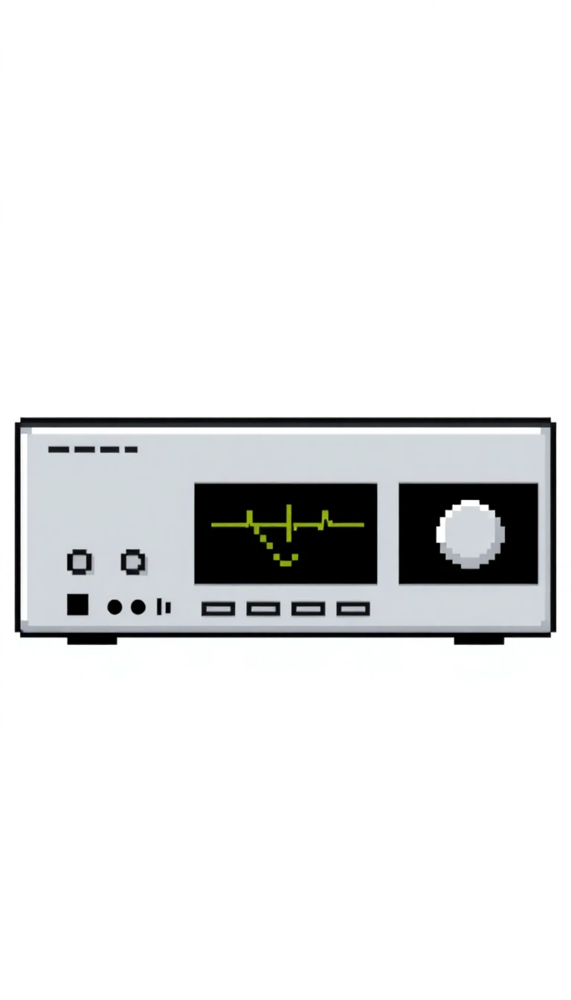

Hi-Fi und Audiogeräte
Erleben Sie Klang in Perfektion mit DougAudio. Dougtone bietet seit jeher Audiolösungen, die durch ihre solide Konstruktion und ihr zeitloses Design überzeugen. Hier stellen wir einige unserer beliebtesten Modelle vor:
DougSphere Surround System
Tauchen Sie ein in ein unvergleichliches Klangerlebnis mit dem DougSphere Surround System. Vier elegant geformte Satellitenlautsprecher und ein leistungsstarker Subwoofer schaffen eine immersive Klangbühne, die jeden Raum in ein Konzerterlebnis verwandelt. Klares Design trifft auf beeindruckende Akustik.
Preis: 1499,- DM
The Squar Lautsprecher (Paar)
Klassischer Klang in einem zeitlosen Gehäuse. Die Squar Lautsprecher liefern satten Bass und klare Höhen in einem schlichten, aber wirkungsvollen quadratischen Design. Perfekt für jeden Raum und jede Musikrichtung.
Preis (Paar): 499,- DM
DougCentre Audio Receiver
Das Herzstück Ihres DougAudio Systems. Der DougCentre Receiver bietet zahlreiche Anschlussmöglichkeiten und eine intuitive Bedienung. Seine robuste Bauweise und das klare Frontplattendesign machen ihn zum idealen Mittelpunkt für Ihre Audio-Setup. Integrierter Radioempfänger inklusive.
Preis: 799,- DM
Das DougConsole Plattenkonsole
Ein Hauch von Nostalgie mit moderner Dougtone Qualität. Das DougConsole ist eine elegante Kombination aus Plattenspieler, Verstärker, Radio und integriertem Stauraum für Ihre Vinyl-Sammlung. Ein Möbelstück, das sowohl optisch als auch klanglich beeindruckt. Echte Holzfurniere und verchromte Details.
Preis: 2499,- DM